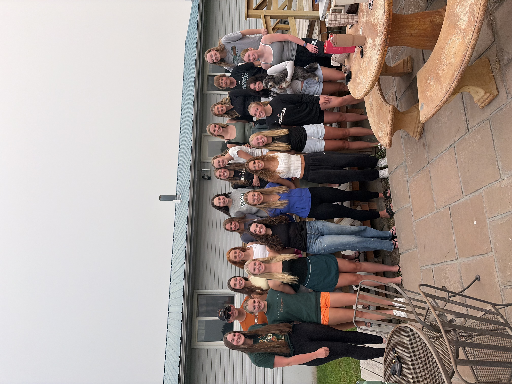

I have been playing sports for as long as I can remember. My journey started with gymnastics for as long as 8 years. My mom wanted me to start a new sport and I tried numerous different routes such as Basketball, Golf, Soccer, Volleyball and a few others. The only one that truly stuck with me was Volleyball. .
Volleyball was my source of happiness when I started. I met my best friends through practicing, and to this day they are still my closest friends.
I absolutely love anything outdoors, specifically the beach. A lot of people say they enjoy hi8king, but I do not. I love the view at the end of the hike, but I think the hike itself is long and tiring! I love to do any form of art in my free time because it absolutely fills my cup!
